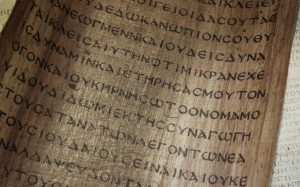

Manuskrypty
- Tekst Nowego Testamentu powstał w grece koine. Język ten pełnił wówczas tą samą funkcję jaką w dzisiejszych czasach pełni język angielski – był uniwersalnym językiem ówczesnej cywilizacji. Swoją popularność zawdzięczał podbojom Aleksandra Wielkiego, którego imperium obejmowało tereny Macedonii, Azji Mniejszej, Egiptu, Mezopotamii i Persji. W ciągu kilkudziesięciu lat język ten stał się popularny w całym podbitym rejonie i był dominującym nawet wówczas, gdy na arenę dziejów wkroczyło imperium rzymskie.
- Początkowo tekst spisywano w sposób ciągły, bez znaków interpunkcyjnych, bez odstępów pomiędzy wyrazami, a także bez rozróżnienia na litery małe i duże. Dla niewprawnego czytelnika mogło to oczywiście powodować trudności w ocenie gdzie rozpoczyna się zdanie, oraz gdzie się kończy. Do dnia dzisiejszego na skutek prowadzonych badań udało się to w ogromnej większości ustalić, jednak wśród uczonych nadal trwa dyskusja dotycząca niektórych fragmentów, jak na przykład Listu do Rzymian 9:5.
- Początkowo tekst zapisywano na papirusie, który powstawał z rośliny zwanej trzciną papirusową. Z końcem II wieku pojawił się pergamin. Była to odpowiednio wyprawiona skóra, znacznie cieńsza i trwalsza niż papirus. To właśnie na pergaminie zapisane są trzy najbardziej znane kodeksy Nowego Testamentu – Synajski, Watykański oraz Aleksandryjski. W XII wieku pojawia się w użyciu papier i od tego momentu to na nim tworzone są kopie wcześniejszych manuskryptów.
- Podział Nowego Testamentu na rozdziały i wiersze miał miejsce dopiero w XVI wieku i dokonał go paryżanin Robert Stefanus. Powstał on podczas jego podróży z Paryża do Lyonu i z pewnymi modyfikacjami przetrwał aż do dzisiaj.
- Tekst żadnego starożytnego dzieła nie jest tak potwierdzony świadectwami jak tekst Nowego Testamentu. Do chwili obecnej uczeni odkryli niemal 5800 manuskryptów zawierających całość bądź część tej Księgi.
- Najstarszym manuskryptem zawierającym pełny tekst Nowego Testamentu jest Kodeks Synajski pochodzący z IV w.n.e. Zawiera niemal 4 miliony liter. Jego odkrycia dokonał w XIX wieku niemiecki badacz starożytnych tekstów biblijnych Konstantin von Tischendorf. Znalazł go w klasztorze św. Katarzyny na górze Synaj w… koszu na śmieci, w którym znajdowały się pergaminy służące mnichom za podpałkę na śmieci. Wytrwałości Tischendorfa zawdzięczamy jedno z największych odkryć biblistyki.
- Najwcześniejszy fragment Nowego Testamentu zawiera papirus określany symbolem P52. Datowany jest na lata 115-130 i zawiera wersety Ewangelii Jana 18:31-33, 37-38 . Dzieli go zatem jedynie około 20 lat od czasu, gdy apostoł Jan napisał swą ewangelię. Może być więc pierwszym odpisem oryginalnego dzieła umiłowanego ucznia Pana Jezusa. Na odnalezionym fragmencie możemy odczytać między innymi słowa Zbawiciela, wypowiedziane do Piłata:
J18:37 (BW)
“Rzekł mu wtedy Piłat: A więc jesteś królem? Odpowiedział mu Jezus: Sam mówisz, że jestem królem. Ja się narodziłem i przyszedłem na świat, aby dać świadectwo prawdzie; każdy, kto z prawdy jest, słucha głosu mego”. - Istnieje wielu biblistów, którzy kwestionują to, że autorem Listu do Hebrajczyków był apostoł Paweł. Papirus 46 datowany na koniec II wieku zawiera najstarszy zbiór listów Pawła i wśród nich, za Listem do Rzymian a przed Listami do Koryntian, znajduje się List do Hebrajczyków.
↞ Spis treści Następny artykuł ↠
kopia strony: https://thaleia.pl/biblia/manuskrypty Wszelkie prawa autorskie należą się autorowi tej strony
527f2b2ae8